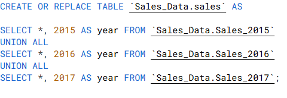
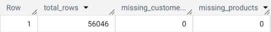

Sales & Returns Analysis · Project Overview
Customer-provided dataset
Nibal Sharrouf executed this data integration project in March 2026 on behalf of a client requiring unified sales data from multiple subsidiaries. The goal was to ingest, clean, and enrich company-wide sales records to enable cross-company analytics and visualization.
The workflow involved consolidating annual sales tables (2015–2017), performing rigorous data quality checks, cleaning missing keys, and finally building an enriched master table that joins customer, product, territory, and returns information. All transformations were implemented in BigQuery SQL and documented step by step.
Business Objective
Create a single source of truth named final_sales that includes complete customer names, product details, regional territories, category hierarchy, and return quantities. This table serves as the foundation for executive dashboards and cross-company performance analysis.
- Consolidate fragmented sales tables (2015, 2016, 2017) → unified
salestable - Identify and remove incomplete records (null customer/product keys)
- Enrich with dimensional data: customers, products, categories, territories, returns
- Ensure data completeness and integrity for reporting
Data Pipeline · Step by Step
The following images document the SQL transformation journey — from raw yearly tables to the final enriched dataset, exactly as executed in BigQuery.
This script creates the base
Sales_Data.sales table by stacking data from three yearly tables (Sales_2015, Sales_2016, Sales_2017) and adds a year column to preserve origin. This is the foundational consolidation step, ensuring all historical transactions are available in one place.

Data quality check that groups sales by
ProductKey and OrderDate to flag any duplicate transactions. This query ensures no accidental duplication from the union step; duplicates would indicate ingestion errors that need to be resolved before cleaning.
.png)
Exploratory query filtering sales where
OrderQuantity ≤ θ. This was used to understand order size distributions before final cleaning. The parameterized approach helped define business rules for excluding unrealistic order volumes in later stages.
.png)
Builds
Sales_Data.sales_clean by removing rows where CustomerKey or ProductKey is NULL, and ensures OrderQuantity > 0. This eliminates incomplete and invalid records, improving data reliability for downstream joins.
.png)
After cleaning, a summary table confirms that out of 56,046 total rows, there are zero missing customers and zero missing products. This guarantees referential integrity before the final enrichment step.

Final transformation that creates
Sales_Data.final_sales. It joins cleaned sales with Customers, Products, Subcategories, Categories, Territories, and Returns. The query also constructs CustomerName (concatenated first/last) and handles missing returns with IFNULL(ReturnQuantity,0). This table is ready for visualization and business intelligence.
.png)
SQL Workflow Architecture
Transformation stages executed in BigQuery:
- Stage 0 – Raw sources: Sales_2015, Sales_2016, Sales_2017 (external tables or CSVs)
- Stage 1 – Union:
CREATE TABLE sales AS (UNION ALL + year column) - Stage 2 – Validate duplicates: GROUP BY ProductKey, OrderDate → HAVING COUNT(*) > 1
- Stage 3 – Cleanse: filter out NULL CustomerKey/ProductKey, OrderQuantity ≤ 0
- Stage 4 – QA: summary aggregation to confirm missing keys eliminated
- Stage 5 – Enrichment (star schema): LEFT JOIN customers, products, subcategories, categories, territories, returns
- Output:
final_saleswith 16+ columns ready for Power BI / Tableau
Data Quality & Governance
Completeness
After cleaning, CustomerKey & ProductKey null rate = 0%. All orders linked to valid dimensions.
Consistency
Standardized column naming, date formats, and region codes across all source years.
Integrity
Foreign key relationships preserved: TerritoryKey → Territories, ProductKey → Products.
final_sales includes OrderDate, OrderQuantity, CustomerName, Region, ProductName, ProductPrice, ProductCost, CategoryName, SubcategoryName, ReturnQuantity — a complete analytical dataset ready for dashboards.
Next Steps: Visualizations
Interactive dashboards will be added here once the visualization layer is finalized.